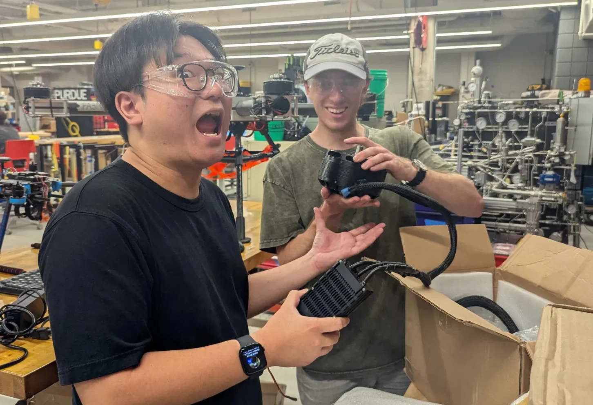
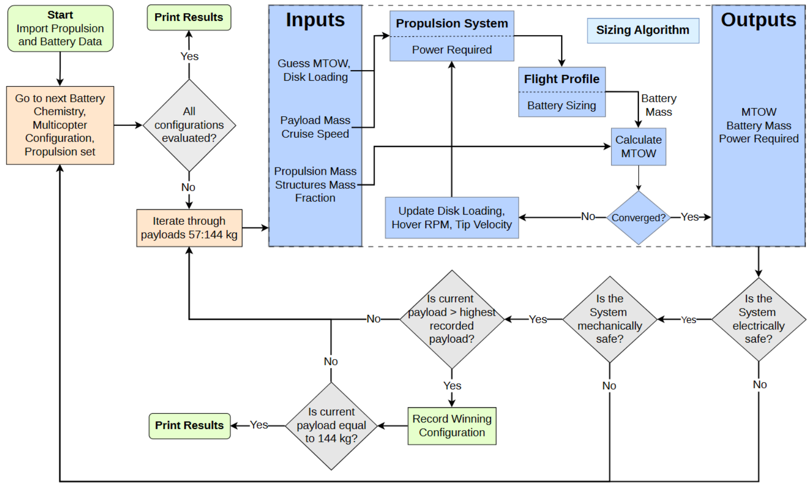
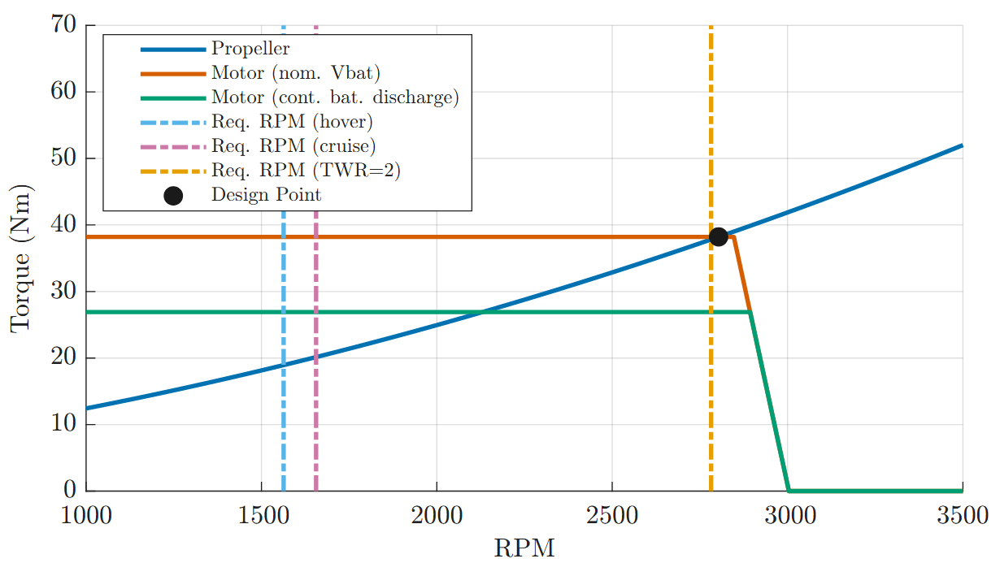
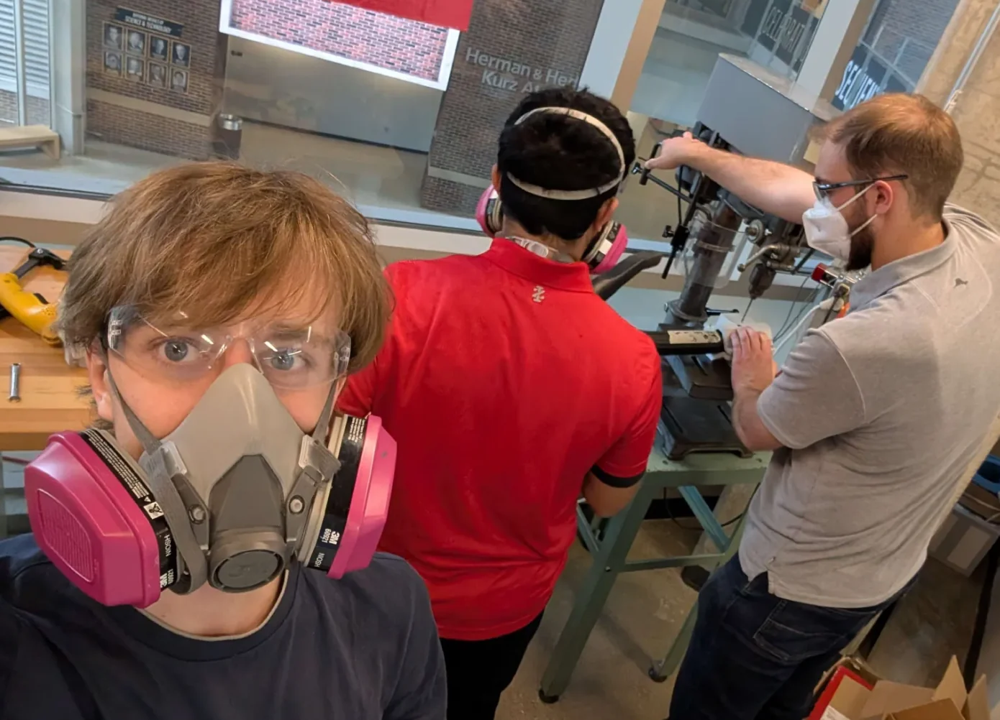
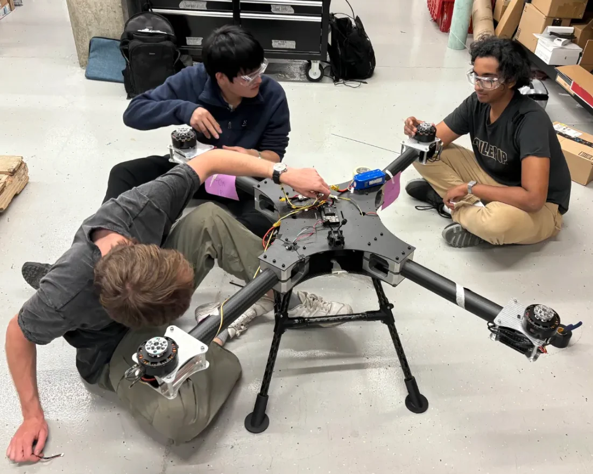
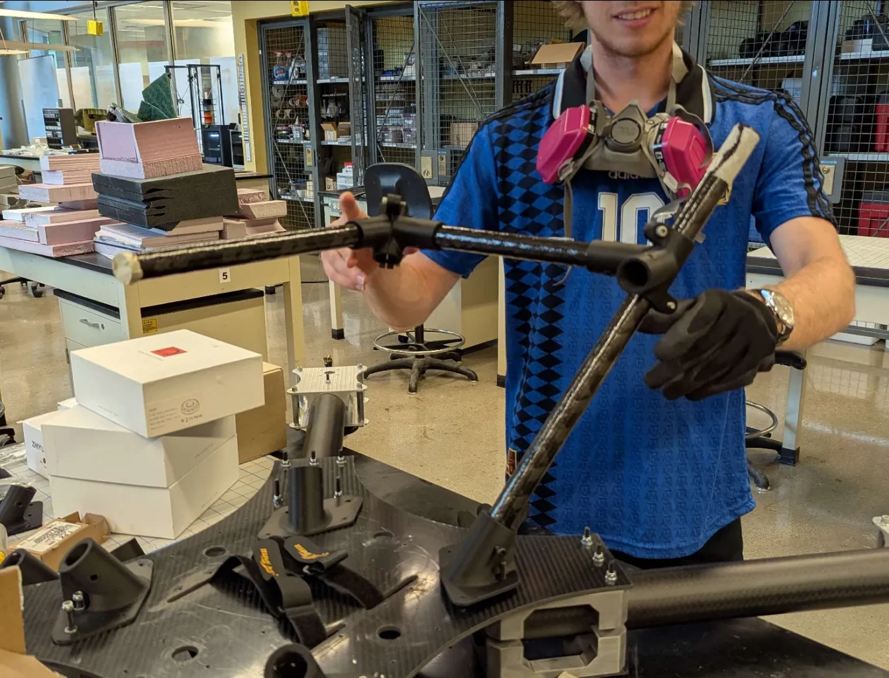
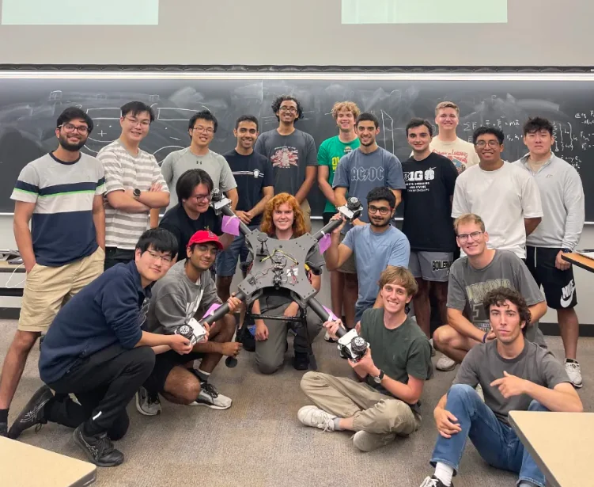
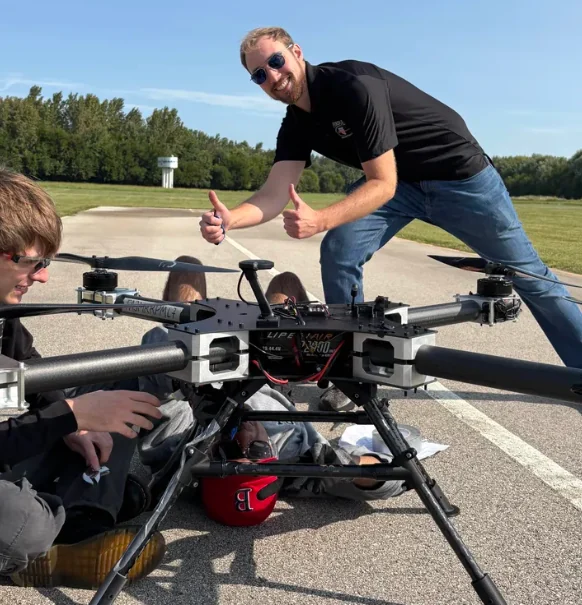
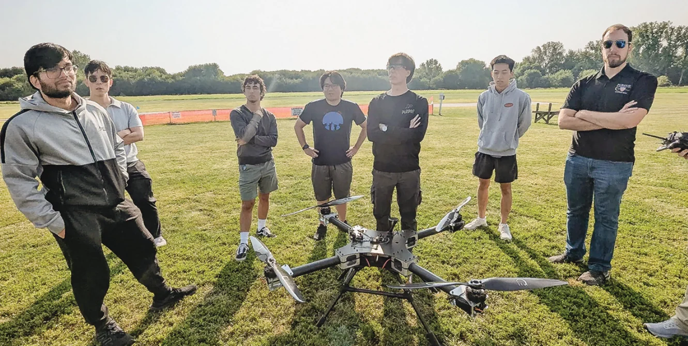
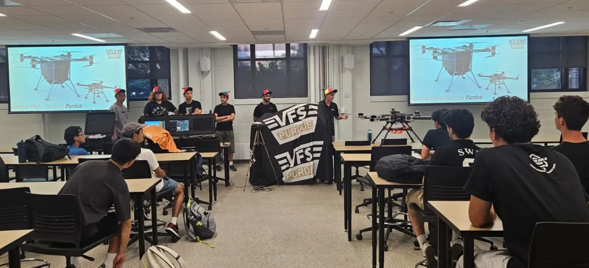

Battery electric
Selected for high power output, practical handling, and compatibility with modular swaps.
Purdue University · GoAERO Competition
Powertrain and avionics development from the first aircraft concepts through a flight-tested prototype to the final aircraft now in manufacturing.
I serve as President of Vertical Flight Systems Purdue, leading an interdisciplinary team of approximately 30 students developing a human-carrying aircraft for the GoAERO Competition. The program progressed from a Stage 1 concept (where we won a NASA award!), through a 32 kg flight-test demonstrator and an intermediate Stage 2 full-scale architecture, to the 248 kg Stage 3 aircraft that we are now manufacturing.
I led the Powertrain and Avionics sections of the Stage 1 and Stage 2 reports and contributed that work to our published AIAA AVIATION 2026 paper. My role has spanned mission-driven sizing, motor and battery selection, electrical architecture, wiring design, prototype integration, flight preparation, and the battery-management electronics for the final aircraft.

01 / Competition Stage 1 · Select
Stage 1 began with requirements rather than a preferred aircraft. The vehicle needed to carry at least 57 kg in the adversity and maneuvering missions, fit its rotor disk inside a 15 ft diameter, achieve a 2:1 thrust-to-weight ratio at maximum input power, withstand dust and rain, preserve access to the payload bay, and support rapid battery swaps. Those constraints tied the airframe, propulsion, and avionics decisions together from the beginning.
We compared gasoline, hydrogen fuel cells, and batteries. The mission profile emphasized short, power-intensive flight and allowed energy resupply, so the high power capability, availability, and simpler distributed installation of batteries outweighed the energy-density advantage of combustion or hydrogen systems. Lithium-ion became the baseline.
Selected for high power output, practical handling, and compatibility with modular swaps.
Eight motors reduced the planform disk area and kept the payload loading paths accessible.
The report compared 100 V at 170 A with 400 V at 42 A, balancing thermal losses against handling risk.
The aircraft retained flight-critical state, motor control, health monitoring, and detect-and-avoid functions onboard.
The Stage 1 power system I proposed separated the upper and lower motor groups into two independent circuits and kept avionics on its own battery so a propulsion-pack swap would not reboot the flight systems. The avionics concept prioritized video, position and pose, state of charge, time of flight, mission phase, and detected obstacles for the operator.
The first architecture also established an important safety boundary: ground computation could handle route planning and reconnaissance processing, but the onboard computer still had to keep the aircraft safe if the ground link disappeared.

02 / Powertrain sizing · Design
I developed a MATLAB sizing and powertrain configuration optimizer algorithm because battery capacity, propulsion performance, and aircraft mass could not be selected independently. A larger battery adds energy, but also increases weight and the power required to fly. The program resolves that coupling and turns the mission profile into a self-consistent set of mass, power, energy, and component estimates.
For each candidate configuration and payload, the inner loop estimates maximum takeoff mass and disk loading, calculates hover and cruise power, integrates the mission energy, converts that energy into battery mass, and feeds the result back into the aircraft mass. It repeats until the mass and power estimates converge. An outer loop then sweeps motors, propellers, battery assumptions, and multirotor layouts before rejecting solutions that violate torque, current, thrust, or propeller tip-speed limits.

I used a rotor figure of merit of 0.70, 95% battery efficiency, and a 70% usable-energy fraction based on baseline aircraft studies as well as further validation with the Stage 2 prototype. I also checked motor torque across the battery discharge cycle. As bus voltage falls, the voltage margin above motor back-EMF decreases, so a motor that looks acceptable at nominal voltage may no longer supply enough torque near the landing threshold. Propeller tip speed was limited below Mach 0.70 to constrain noise and compressibility effects.

The analysis was not a one-time answer. Stage 1 supported a coaxial eight-motor baseline using the T-MOTOR U15XL and NS57×22 propeller family. Stage 2 proposed a lighter four-motor aircraft using the MAD AM60 at 400 V in its proposal (with the prototype, downscaled equivalent being a 50 V system using the Titan T8120 motor; the one we flew). Prototype testing and a renewed safety review then brought Stage 3 back to an X8 layout, but with eight isolated 100 V channels and the system detail needed to manufacture it.
 stage 2 (right) stage 3 not finalized design (middle) render, all drones in one picture.png)
Stage 1 proposal
Stage 2 selection
Stage 3 final design
The Stage 2 architecture traded the coaxial layout's redundancy for lower takeoff mass, lower structural mass, reduced parasitic drag, and fewer propulsion components. Its four independent 400 V branches isolated switching noise and limited cross-coupling. Stage 3 retained the independent-branch philosophy but returned to eight rotors and a voltage that the team could build, service, and test more safely.
Surprisingly, Stage 3 went back to a very similar configuration as our proposal design (which was optimized by my configurator optimizer code :) ), as concerns regarding High-Voltage safety, current management and motor/ESC/battery redundancy benefits of isolated X8 powertrains pushed us to a "less efficient" but much more feasible and safe-to-operate design.
Read the AIAA paperFull sizing methodology, assumptions, and analysis03 / 40%-scale prototype · Build and integrate
The 32 kg demonstrator was the bridge between report-level architecture and a flyable system. I led propulsion and avionics integration, including component placement, power distribution, signal routing, wiring, and bringup. The detailed wiring diagram became the shared reference for assembling the aircraft and tracing faults during ground testing.
The prototype used a Cube Orange+ flight controller, ZED Box Mini companion computer, ZED X stereo camera, time-of-flight altitude LiDAR, Here RTK navigation, optical flow, telemetry, video and RC links, and four motor controllers. The architecture separated flight-critical control from perception and kept navigation, communications, power, and propulsion interfaces explicit before installation.

.png)
A fused high-current path fed the PDB and ESCs, while dedicated BEC outputs supplied the voltage rails required by avionics and cameras.
The Cube handled stabilization and motor commands while the Jetson provided higher-level perception and autonomy compute over Ethernet.
Power rails, ESC command paths, sensors, navigation, telemetry, video, and the companion computer were verified before the complete aircraft was armed.
Manufacturing forced the system diagram to confront real constraints: connector access, strain relief, cable routing around carbon structure, sensor fields of view, thermal paths, and the separation of low-level signals from motor power. Mechanical assembly and electrical integration progressed together because a mounting decision could change harness length, serviceability, or sensor performance.




04 / Bringup and flight · Fly and iterate
Bringup moved in controlled layers. We verified the low-voltage rails and current paths first, then the flight controller, receiver, telemetry, GNSS, LiDAR, companion computer, and each ESC command channel. After sensor calibration and motor-direction checks, the aircraft progressed through ground tests, manual stabilization flights, waypoint missions, and automated landing.
The scaled flight campaign validated waypoint missions and automated landing. A bottom-mounted LiDAR provided precise height above ground during the landing sequence. With GPS alone, the report recorded an automated landing roughly 1 m from the commanded coordinates, establishing a measured baseline for later RTK and vision-assisted improvements.
That result closed the first complete design loop: select an architecture, size it, build it, integrate it, fly it, and use the flight data to refine the full-scale aircraft.


05 / Competition Stage 2 · Actual avionics
The hardware used for Stage 2 testing was built around a Cube Orange+ for the safety-critical flight-control loop and a ZED Box Mini for higher-level perception and autonomy. Navigation combined Here 4 RTK GNSS, an LW20/C time-of-flight rangefinder, and HereFlow optical flow. ZED X stereo cameras and the SF40/C LiDAR supplied perception data to the companion computer.
An independent avionics battery supplied 5 V and 12 V conversion. RFD900X-US telemetry, 2.4 GHz ELRS control, and DJI O4 video kept ground-station data, manual control, and camera links separate. This as-built architecture is the system that informed the Stage 2 flight results and the final Stage 3 sensor and communications selections.

A human-carrying multirotor creates wiring distances and electromagnetic conditions that small drones rarely face. CAN links for GNSS, BMS units, optical flow, and DroneCAN motor controllers use shielded twisted pairs with 120 ohm termination. UART links are shielded when they run beyond 1 m or near power conductors. The stereo camera uses GMSL2 over automotive-grade coax because it carries high-bandwidth data through a noisy environment.
The radio architecture also separates mission functions by band: 915 MHz SiK telemetry for command and status, ELRS diversity control across 2.4 GHz and 900 MHz for low-latency manual override, and 5.8 GHz DJI video for pilot views. Physical antenna separation, polarization, and channel coordination reduce self-interference.
RTK GNSS is the primary global-positioning source. Downward LiDAR improves altitude estimation near the ground, but reflective water can make its return unreliable, so the flood mission falls back to barometric or manual descent control. Optical flow provides relative motion below 10 m in GPS-denied areas and can be fused with LiDAR and visual-inertial odometry.
ArduPilot was selected over PX4 for its community support and sensor compatibility. The safety case therefore relies on redundant sensing, independent control links, manual override, and explicit failsafe transitions rather than assuming autonomy will always remain available.

06 / Competition Stage 3 · Final design
Stage 3 is the final aircraft iteration and the point where our concept studies, sizing work, and prototype flight data converge. The selected aircraft is a four-axis coaxial octocopter with eight T-MOTOR U15XL motors and 57 inch NS57×22 propellers. At a 248 kg maximum takeoff mass, it is designed to carry 94 kg for a 15 minute mission and cruise at 30 m/s.
The layout is now being manufactured. The next planned milestone is the structured ground and flight-test campaign next semester, beginning with subsystem verification and restrained testing before progressing toward the full aircraft envelope.

The mission-driven optimization again selected the U15XL and 57 inch propeller combination as the best feasible way to maximize payload. Every candidate was checked across the battery discharge cycle for thrust-to-weight ratio, motor torque, motor and battery current, and a propeller tip speed below Mach 0.70. The final operating points require 18.7 N·m per motor in hover and 20.1 N·m in cruise, both below the motor's 27.5 N·m continuous rating. Predicted power is 32.2 kW in hover, 40.4 kW in cruise, and 50.8 kW during acceleration.
We deliberately replaced the intermediate 400 V concept with eight isolated channels below 100 V. Each ESC receives power from two 12S packs in series, about 86.4 V nominal and 100.8 V at full charge. A failed channel does not pull down a central propulsion bus, so the remaining seven can continue to operate. QS8 anti-spark connectors and 8 AWG wiring can also be assembled and serviced within a student research environment without the welded buswork and additional arc-flash controls demanded by a centralized 400 V system.
One sensor board monitors each power channel and reports to a central battery-management computer. The design adds cell-voltage and temperature monitoring, sag-compensated state estimation, per-cell internal resistance, pre-charge and contactor control, current-versus-throttle fault detection, and backup power for the avionics bus. Aerogel cell barriers were considered, but the mass and integration cost did not justify them for the selected conservative cells and monitoring strategy.
The final avionics architecture is built around a Cube Orange+ and a Jetson-based ZED Box Mini. The Cube adds triple-redundant inertial sensing, an H7 processor, and a failsafe co-processor. A Here 4 GNSS/RTK unit is the primary global navigation source, HereFlow supplies relative motion when GNSS is unavailable, and the ZED X stereo cameras support perception and obstacle detection. Separate 915 MHz MAVLink telemetry and 2.4 GHz ELRS manual control preserve independent communication paths.
Stage 2 flight tests exposed two aircraft-level effects that bench tests could not. Rotor downwash pressurized the exposed flight controller and made its barometric altitude noisy, so the estimator now prioritizes a Lightware rangefinder near the ground, Here 4 GNSS altitude beyond range, and the Cube barometers only as a fallback. Motor vibration above roughly 40 to 50 m/s² also caused estimator velocity divergence. Mounting the controller on 10 mm foam isolation restored normal flight, and the Stage 3 structure is being designed so its natural frequencies stay outside the 1800 to 2400 RPM motor range with at least 200 RPM of separation.
The prototype ultimately held stable hover after optical-flow recalibration with stationary drift below 0.5 m/s, kept altitude deviation below 2 m, and landed within 1 m of the target. It also demonstrated lost-link return-to-launch and a safe landing after an estimator failure. Those results support the final sensor fallback chain and show that the Stage 3 architecture is a test-informed design, not simply a scaled render.
Manufacturer propeller data agreed closely with the aerodynamic fit, with figure of merit within 1.4% of published estimates. The Stage 2 prototype then provided a system-level check: predicted hover endurance stayed within 9.42% of test data, hover power within 7.60%, and cruise power within 12% at 20 m/s and above. The model still tends to underpredict power because it does not fully capture profile drag, rotor interference, auxiliary loads, and transition effects, but the agreement is strong enough for preliminary design and for comparing hardware choices.
07 / Battery management · In development
For the full-scale aircraft, I am developing a monitoring and balancing battery-management system for the high-energy battery pack. This work connects the sizing model to the electronics that supervise the cells in operation, including pack current, cell voltage, board and pack temperature, balancing, fault reporting, and communication with the flight controller.
The current design uses an STM32H723 as the main processor. Dedicated ADCs measure cell voltage and pack current, with a Hall-effect sensor on the positive pack conductor to avoid placing a high-loss shunt in a path that can exceed 150 A. Temperature sensors connect to the MCU's internal ADCs. The firmware is based on ArduPilot's AP_Periph framework so the board can reuse ChibiOS memory handling, SPI and CAN drivers, and valid DroneCAN communication with the aircraft.

Before pursuing this design, I actually designed a schematic using TI's BQ79616, as it fit our requirements perfectly: daisy-chainable 12S high-accuracy battery monitor with several protections against pack faults, yet after digging into how we'd actually implement and code this chip, we found a lot of people having trouble with bringup since most of TI's communication protocols and register tables are not released to the public. This design was then archived and since, we have moved on to the analog route. This is the overall schematic of it though, for what it's worth:


08 / Team leadership
Alongside my technical work, I coordinate design reviews, procurement, manufacturing, testing, scheduling, and aircraft-level decisions across our subgroups. The project only advances when powertrain, avionics, autonomy, structures, and operations agree on interfaces and verification plans.
Our team earned the U.S. University Innovation Award and raised more than $74,000 toward aircraft development. Those are team achievements built through engineering work, clear ownership, and a shared willingness to build and test the system together.
